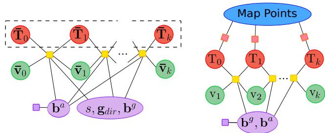
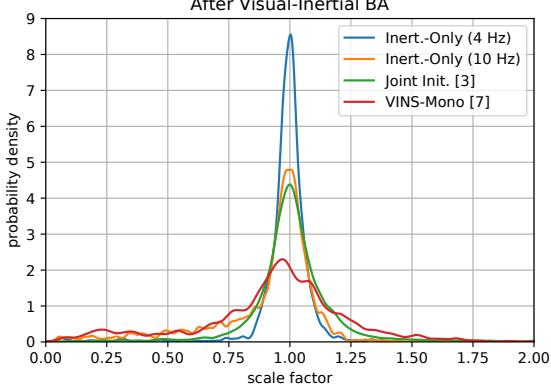
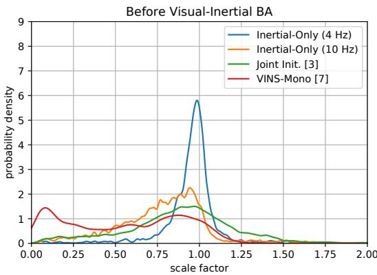

1. ★ 它专攻「冷启动」
本节目标
读完你应该能：说清「冷启动」难在哪；复述「把视觉轨迹当常数、只优化惯性量」这个反直觉操作；写出待估变量与惯性残差形式；讲清它如何成为 ORB-SLAM3 的初始化；并指出它的盲区。
和前面课程怎么接
这是第二季悬念⑤的最后一块拼图。第二季 0029/0030 预积分 讲 ΔR/Δv/Δp 时，原文没有初始化章节；本季 0057 VINS-Mono 给的是「视觉先动起来之后再做松对齐」四步；而本节场景更极端——最开始连可靠的视觉几何都还没有，只有 IMU 在动。它和 0045 ORB-SLAM3（Atlas 多地图、重定位）同源同作者。
视觉-惯性 SLAM 有个死规定：不初始化，就根本跑不起来。原文第 11 行说得直白——「as long as IMU is not initialized, visual-inertial SLAM cannot be performed」。问题在「冷启动」那几秒：
- 相机刚开机，还没积累足够视差，视觉几何（三角化、尺度）根本建不起来；
- 这空档里，只有 IMU 在提供信息——它在以几百赫兹测加速度和角速度；
- 而单目尺度在匀速运动下本来不可观，若前几秒运动太「乖」（接近常速），尺度更解不出。
既往方法要么解代数方程、忽略 IMU 噪声（Martinelli / Kaiser），要么分步最小二乘、忽略相关性、还要等 15 秒（ORB-SLAM-VI），要么假设偏置为零（VINS-Mono 的 1–2 秒版）。本文的野心：一次性联合优化所有惯性量，并且把 IMU 的概率模型（噪声）也算进去（第 19–27 行）。
本课定位（必须显式记住）
第二季 0029/0030 讲预积分时明确「没有初始化章节」；本季 0057 VINS-Mono 给了视觉先动、再做松对齐的四步；而本节是更底层的「冷启动」——最开始连视觉都还没可靠几何，只有 IMU 在动。它把「怎么开局」这件事推到了最极端的起点。
2. ★ 方案：只用 IMU 的 MAP
核心思路一句话：视觉轨迹先跑起来、当作已知常数钉死；然后只用 IMU 测量去做优化，联合估计重力、尺度、速度、偏置。下面这张图解释「为什么只靠 IMU 也能定出重力方向与尺度」——这是全文最反直觉的一步。
怎么看这张图：① 加速度计永远测「总加速度 = 重力 + 运动加速度」；② 静止时运动加速度为零，所以读数纯是重力；③ 一旦动起来，重力被「混」进总读数里——但只要运动足够丰富，优化就能把它从总读数里分离出来，同时顺带定出尺度。
要记住的一句话：重力，是从加速度里「分离」出来的那个固定成分；而尺度，是让视觉轨迹与 IMU 预积分对得上的那个缩放因子。
2.1 待估量与目标函数
把视觉轨迹钉死为常数后，待估的惯性量只有四个（原文第 68 行）：
MAP 后验与目标函数（第 80、98 行）：
其中惯性残差就是我们在 0030 预积分 见过的 ΔR/Δv/Δp 形式（第 112–120 行）：
偏置先验（第 141 行）：当加速度偏置不可观时，用 $r_p=\lVert b^a\rVert^2_{\Sigma_p}$ 把它拉回 0，避免和重力方向耦合混淆。
2.2 为什么「只用惯性」的目标函数可解（最反直觉的一步）
原文原话（第 39 行）
「The uncertainty of visual SLAM trajectory is much smaller than the IMU uncertainties and can be ignored while obtaining a first solution for the IMU variables. So, we perform inertial-only MAP estimation, taking the up-to-scale visual SLAM trajectory as constant.」
翻译成人话：视觉 SLAM 给出的轨迹，不确定度远小于 IMU 的不确定度，所以求第一版惯性量时，可以把视觉轨迹当常数忽略掉它的噪声。这样一来——
- 未知量只剩 $\{s,\ \text{重力方向},\ \text{偏置},\ \text{速度}\}$，维数很低；
- 而且 IMU 残差对尺度 $s$、速度 $\bar v$ 近似线性，优化很顺；
- 因为视觉没有数据关联错误，连鲁棒核（Huber）都不需要（第 103 行）。
结果就是：这一步纯惯性优化，只要约 5 毫秒就能出种子。下面这张图把「冷启动」和「等其他初始化」做个时间轴对比。
怎么看这张图：① 第①格就是「冷启动」——别的方法要等第②格才开局，本文在第①格就用纯 IMU 把重力与尺度定住；② 第③格说明「先把重力与尺度定住，视觉一来就能立刻用上」，不用再等。
要记住的一句话：冷启动的聪明处，是「不等视觉」，先用 IMU 把最难的尺度/重力钉住。
互动判断
为什么「把视觉轨迹当常数、只优化惯性量」是可行的？
3. 它怎么并进 ORB-SLAM3
这篇论文的作者 Campos、Montiel、Tardós，正是 ORB-SLAM3 的同一团队。所以本文不是孤立方法，而是ORB-SLAM3 的初始化模块。把它和第 45 课学的 ORB-SLAM3 接起来看：
Atlas 多地图之前，先要好初始化
ORB-SLAM3 的 Atlas 能管理多张子地图、能做重定位（0045 学过）。但在建第一张地图前，必须先把尺度、重力、速度、偏置定准——本文就是干这个的「第一棒」。
本文即其初始化，且不止于初始化
原文第 210 行还提到：它不仅能初始化，也能在 SLAM 运行中低成本精修尺度/惯性量；且容易改成立体版（去掉尺度即可）。
换句话说，第二季悬念⑤「IMU 初始化怎么做」，由本篇与 0057 VINS-Mono 共同填补：VINS-Mono 是「视觉先动、再做松对齐」四步（约 1–2 秒但假设偏置为零、尺度误差约 22%）；本文是更极端的「冷启动」——视觉还没动就先用纯 IMU 把重力/尺度钉住，尺度误差仅约 5.3%。

怎么看这张图：① 左图是「纯惯性优化」：黄色=IMU 残差，紫色=加速度偏置先验，虚线表示关键帧位姿被钉死（固定）——这就是「视觉当常数」；② 右图是首轮 VI-BA：红色=重投影误差，视觉终于参与；③ 左图直观回答了「为什么只优化惯性」——视觉位姿不动，只有惯性量在滑。
4. 实验数字
在 EuRoC 上，每 0.5 秒发起一次初始化，共 2248 次（第 162 行）。关键数字（第 172–182 行，原文口径）：
平均初始化
＜ 4 秒；平均尺度误差 5.29%；轨迹用时约 2.16 秒。
对比联合法 [3]
联合法需要 13 秒总时间；本文（纯惯性 5 ms + VI-BA 132 ms）快得多。
对比 VINS-Mono
VINS-Mono 约 22% 尺度误差；本文在 2.15 秒时仅 4.25%。
救活难序列
接 ORB-SLAM-VI 后，V1_01 尺度 0.4% / ATE 0.023；V1_03 原先初始化失败、现在能跑。

怎么看这张图：① 横轴是「估计尺度 / 真值尺度」，越靠近 1 越好；② 本文方法（VI-BA 前后）的分布在 1 附近最集中、方差最小；③ 2248 次大规模实验说明结果稳定，不是偶然。

怎么看这张图：① 与上一图同为 Fig.2 的尺度分布，可对照看各方法在 BA 前后的收敛；② 重点是本文方法的峰值紧贴 1、且尾部更短，说明尺度误差小且稳定；③ 两张图共同支撑「5.29% 平均尺度误差」的结论。
怎么看这张图：① 本文在「尺度误差低」和「耗时短」之间取得了最好平衡；② VINS-Mono 虽快，但代价是偏置假设为零、尺度误差大；③ 注意这是示意图，条形高度按原文给出的量级绘制，具体数字以正文为准。
要记住的一句话：冷启动的价值不是「最快」，而是「又快又把尺度/重力定得最准」。
5. 局限
原文自己划了边界（第 148、156、177 行），要诚实看待：
- 常速 / 近常速不可观：若平均加速度小于重力的 0.5%，这段测量会被直接丢弃——因为此时尺度真的解不出。
- 依赖单目 SLAM 先给好种子：它要先跑纯单目 SLAM 得到 up-to-scale 轨迹；若困难序列视觉初始化本身失败，会拖慢总时长。
- 需要三个初始尺度猜测：用 1 / 4 / 16 米三种中位深度各跑一遍，取残差最小的——本质是「多猜几个再择优」，不是单发必中。
和小结对照
对比 0063 DM-VIO：DM-VIO 用延迟边缘化去「事后修正」尺度，本文用纯惯性优化去「事前定住」尺度——一个是冷启动的钉，一个是运行中的修，正好互补。
6. 收尾与悬念偿还
到这一节，第二季留下的「悬念⑤：IMU 初始化怎么做」终于被彻底偿还：
- 0029/0030 预积分：给了 ΔR/Δv/Δp 与协方差，但没有初始化章节；
- 0057 VINS-Mono：视觉先动、再做松对齐四步（约 1–2 秒，偏置假设零，约 22% 尺度误差）；
- 本篇（0064）：更极端的冷启动，视觉还没动就只用 IMU 把重力/尺度钉住（＜4 秒，约 5.3% 尺度误差），并成为 ORB-SLAM3 的初始化。
而 0063 DM-VIO 则把尺度问题推到「运行中的事后修正」。三者连起来，就是本季 VIO 主干对「尺度何时可解、怎么解、解错了怎么修」的完整回答。
互动判断
本篇纯惯性初始化，最反直觉的一点是什么？
课后练习
- 用三句话向同学解释「冷启动」为什么难，以及本文怎么破局。
展开查看答案
① 冷启动那几秒相机还没积累足够视差，视觉几何（三角化、尺度）建不起来，只有 IMU 在提供信息；② 而单目尺度在匀速运动下不可观，前几秒运动太乖就更解不出；③ 本文破局：先把视觉轨迹跑出来当常数钉死，只用 IMU 做 MAP 优化，把重力方向与尺度定住，约 5ms 出种子，＜4s 完成初始化。
- 写出待估变量 $X_k$，并说明为什么优化时「视觉位姿」不出现在未知量里。
展开查看答案
$X_k = \{s,\ R_{wg},\ b,\ \bar v_{0:k}\}$（尺度、重力方向、偏置、up-to-scale 速度）。视觉位姿不出现，是因为纯单目 SLAM 已经先给出了 up-to-scale 轨迹，本文把它当作已知常数冻结（原图 Fig.1 里虚线即表示固定变量），所以优化只动惯性量。
- 为什么「只用惯性」的目标函数可解？引用原文第 39 行的论证。
展开查看答案
原文：视觉 SLAM 轨迹的不确定度远小于 IMU 的不确定度，因此求第一版惯性量时可以忽略视觉噪声、把视觉轨迹当常数。于是未知量只剩 {尺度,重力方向,偏置,速度}，且 IMU 残差对尺度/速度近似线性、维数低，约 5ms 即可解；又因视觉无数据关联错误，连 Huber 核都不需要。
- 对比本篇与 VINS-Mono 的初始化：一个冷启动、一个视觉先动，各自的代价与收益？
展开查看答案
VINS-Mono（0057）：视觉先动、再做松对齐四步，约 1–2 秒，但假设偏置为零、尺度误差约 22%。收益是快；代价是初值假设强、尺度误差大。
本篇（0064）：更极端的冷启动，视觉还没动就只用 IMU 钉住重力/尺度，＜4s、约 5.3% 尺度误差，还能救活 V1_03 这类原先失败难序列。收益是准、且能处理「视觉尚未就绪」；代价是依赖单目 SLAM 先给好种子、常速段仍不可观。
一句话：VINS-Mono 用「视觉先动」换速度，本篇用「纯 IMU 先钉」换准度与冷启动能力。 - 本文的三个局限里，哪一条本质上和「单目尺度不可观」是同一件事？为什么？
展开查看答案
「常速 / 近常速不可观（平均加速度＜0.5% 重力就丢弃）」本质就是单目尺度不可观的具象化：当运动激励不足时，尺度这一不可观量根本没有被观测到，优化没有信息来源，只能丢弃这段测量。另两条（依赖视觉种子、三个尺度猜测）是工程实现限制，不是不可观本身。